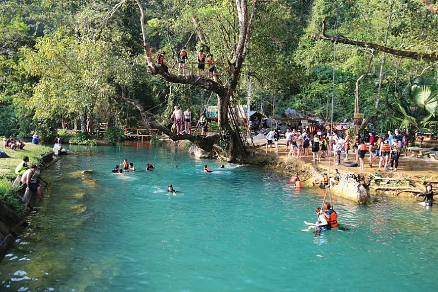
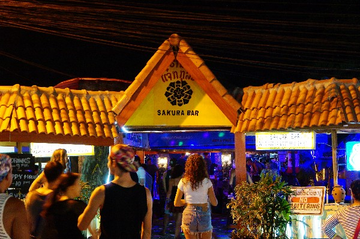

관심있는
동남아시아에서 가장 느긋하고 평화로운 도시. 태국의 화려함도, 베트남의 열정도 아닌, 느리고 고요한 삶의 방식으로 은근하게 번져오는 라오스의 유혹. 사원의 도시가 잠 깨어나는 모습을 보며 맨발로 거니는 골목길들.
방비엥의 대표 액티비티 튜빙과 카약킹 외에도 방비엥의 자연을 한눈에 담는 짚라인, 시골을 구석구석 볼 수 있는 버키카, 에메랄드빛 샘물이 인상적인 블라군 등 방비엥에는 다양한 액티비티가 준비되어 있다.
어쩌면 여행준비를 하면서 가장먼저 들어봤을 이름 '사쿠라바' 어디든 마음에 드는 자리를 잡고 술 몇잔 마시다 보면 어느새 세계 각지에서 온 사람들과 친구가 되는 개방적인 분위기. 젊음과 청춘을 느끼고 싶다면 한번즈음은 가보는 것이 좋다.
